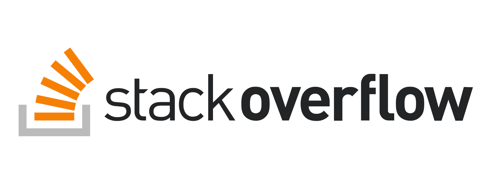
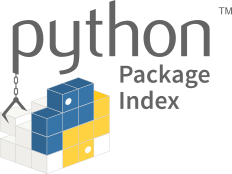
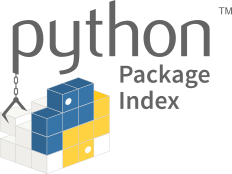
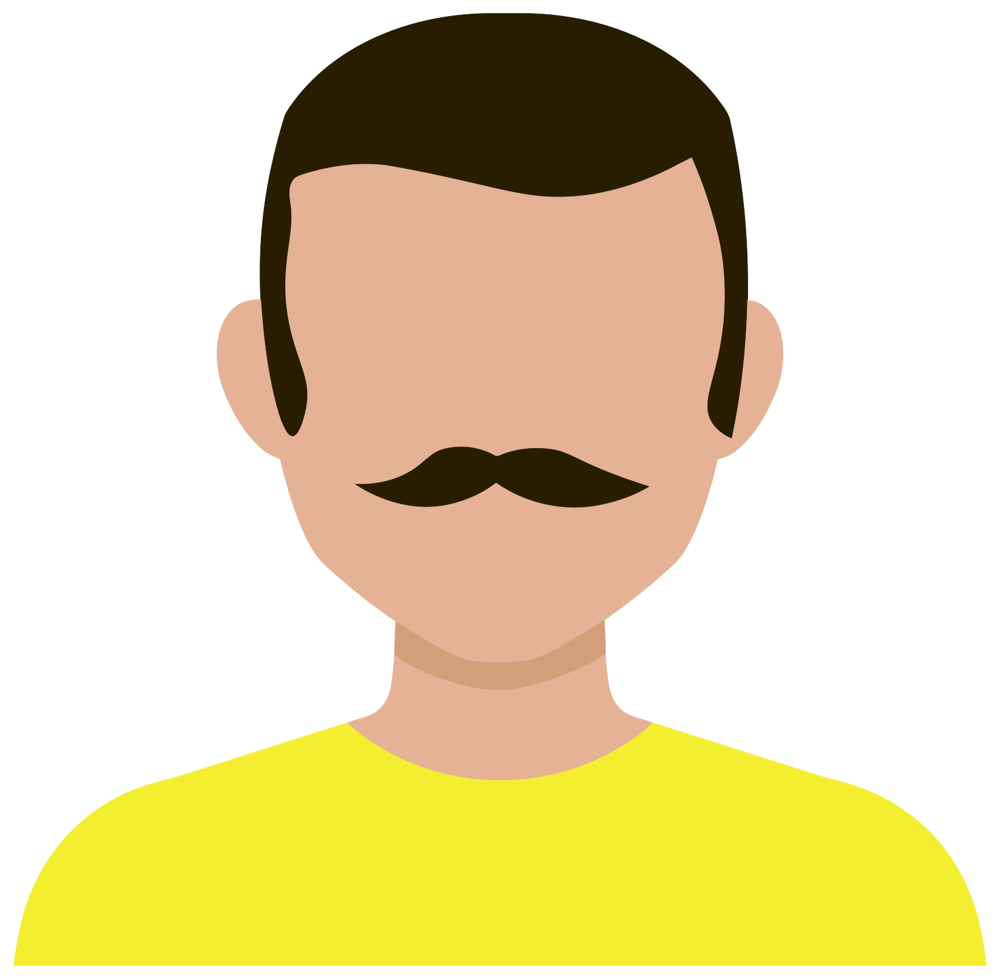
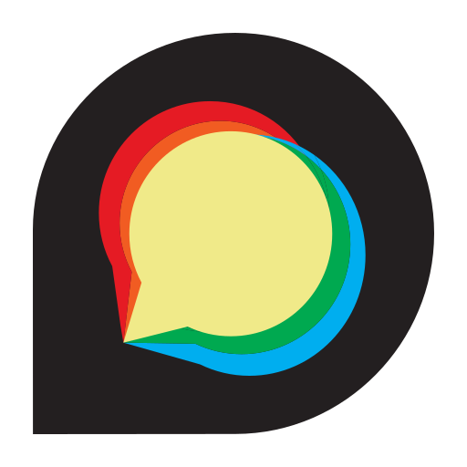
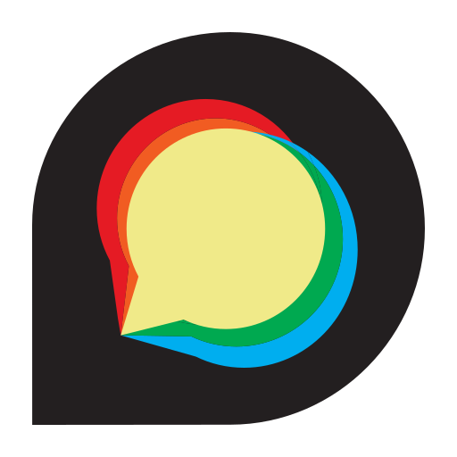

A Minimum Viable Project
First Collaborator
- Tahia joins the lab
- Wants to use the existing data and clean up some more

- Jess divides the code between two repositories
- One for data and data cleaning
- The other for the simulation
Collaboration as Learning
- Jess and Tahia start using pull requests in the data cleaning repo
- Biggest benefit is code review
- Jess can look over Tahia's code before merging it
- Her coding style improves as a result of the reviews
- Which reduces the load on Jess
- Jess has been reading Stack Overflow for years
- Starts posting questions for the first time
- And including links to questions and answers in code and commits

Sharing Data as Files
- Tahia and Jess decide to put data on DataDryad
- Get a DOI for every dataset from Zenodo
- Require everyone in the lab to get an ORCID

Sharing Data as Packages
- Jess turns the simulation into a Python package
- Includes a few data files
- Can be installed directly from GitHub with
pip
pip install git+ssh://git@github.com/gvwilson/nitinat
- More complicated than file upload
- But allows people to get the data:
- With the code that manipulates it
- Using tools they have to learn anyway
 

Regression
- Jess's supervisor takes on an undergraduate intern named Ren to help with data cleaning
- Every change Ren makes works for the file he's looking at…
- …but breaks processing of some other file

- Don't be Ren
Testing
- Jess starts adding tests with pytest to the data cleaning project
- Creates small input files, each containing one problem
- Test that the software reads and fixes the ones it's supposed to
- And that it actually fails when it's supposed to
- Testing accelerates development

Where Do Tests Come From?
- Working backward from failures
- Jess creates a reproducible example (reprex) each time the code fails
- Throw away input until the problem goes away
- Then undo the last change
- Working forward from code
- The coverage module shows which lines of code aren't tested
- Jess constructs tests to reach untested lines
- Coincidentally reveals some code that is no longer needed
Design for Test
- Some code is hard to reach with tests
- Or requires thirty lines of setup for a two-line test
- Both are signs that the code isn't modular
- And will be hard to fix or extend in future
- So Jess refactors the code so that parts aren't as tightly coupled
Taschuk's Rules
- Also cleans up according to Taschuk2017
- Adds command-line argument handling
- Eliminates hard-coded paths
- Starts linting the code with black, flake8, and isort
- Forestalls a lot of
argumentdiscussion about coding style
- Forestalls a lot of
- Does not write comprehensive documentation (yet)
- Still too early to know whether it will pay off
- "Documentation, like research, mostly goes unread."
What Can Reasonably Go Wrong?
- We knew something like COVID-19 was bound to happen eventually
- Lots of people told us how to prepare
- And those preparations would have made daily life better before the pandemic hit
- We can predict some of the major changes that will happen to research software projects
- Preparing for them now makes life better right away
Things Are Going Well…
- Jess and Tahia publish two papers about the data
- Add a
CITATION.cfffile to the repository
- Add a
- Start to get email from other researchers
- "How can I get your data?"
- "Please add feature X so that I can clean up my data too"
- Jess belatedly starts a blog
- Bewildering variety of tools
- Eventually settles on Hugo
- Hosted on GitHub Pages

…And Then It Happens
- Jess completes their PhD and starts working at a government lab rewriting their simulation
- No longer has time for the data cleanup project
- Agree that Tahia will become its lead
- At this point Jess discovers that:
- Project and personal communication are tangled up in their email
- They do a lot of things that they're not really conscious of doing
Communication
- Register a domain name for the project
- Still use Hugo to build the site and GitHub Pages to host it
- Create an
admin@account on that domain- Takes months to train people to send mail to it instead of directly to Jess
Discussion
- Create a mailing list for discussion
- Debate using Slack and Discourse
- Eventually agree they're already being interrupted too often
 

- List is moderated
- 0.1% of Reddit users generate 38% of attacks on others
- 1% accounts for 74% of attacks Kumar2018
Code of Conduct
- Add a Code of Conduct to the repository
- Luckily, do this before announcing the handover
- One contributor strongly objects to Tahia becoming project lead
- Comments become very personal
- Having CoC in place allows them to ban the person without being accused of personal animosity
Checklists
- Jess (finally) starts creating checklists
- Each one is a Markdown file in the project's Git repository
- Copy and paste into an issue each time the task needs to be done

Passwords
- Also starts using a password manager
- Allows them to share credentials with Tahia
- And gives them a bit of protection from the disgruntled ex-contributor
Please see [Smalls2021] for other steps you should take right now.
Roles and Responsibilities
- A systematic way to create checklists
| Person | Roles | Role | Task | |
|---|---|---|---|---|
| ghopper | admin | admin | merge PRs | |
| kjohnson | admin, commit | × | admin | assign issues |
| aturing | commit | commit | publish posts | |
| bwk | commit | commit | file issues |
- Gives you a list of what actually needs to be done
- It's always longer than you first expect
- Tells everyone who to go to for what
- Particularly when their first choice is on holiday
- Helps with succession planning
- "We don't have anyone who does that any more…"
The Hertweck Test
Score your project from 0 to 10:
- Code of Conduct
- Files organized according to Noble's Rules
- Collaborate via a Git repository
- Share work as packages
- Repeatable tests whose coverage is known
- Code and data have licenses and DOIs
- Searchable discussion archive
- Checklists for important tasks
- Passwords in a password manager
-
Defined roles
-
Pick one thing to improve by next session.
- What else does your project do or have that makes life better?
Roles and Responsibilities
- List things people do to keep your project going in Column A.
- List people who contribute to the project in Column B.
- Draw lines to connect them. What roles can you identify?
Checklist
- Read through these checklists.
- What do you not do?
- What do you do differently?
- What do you do that isn't listed?
- What would you take out of these checklists to make room for more important things?